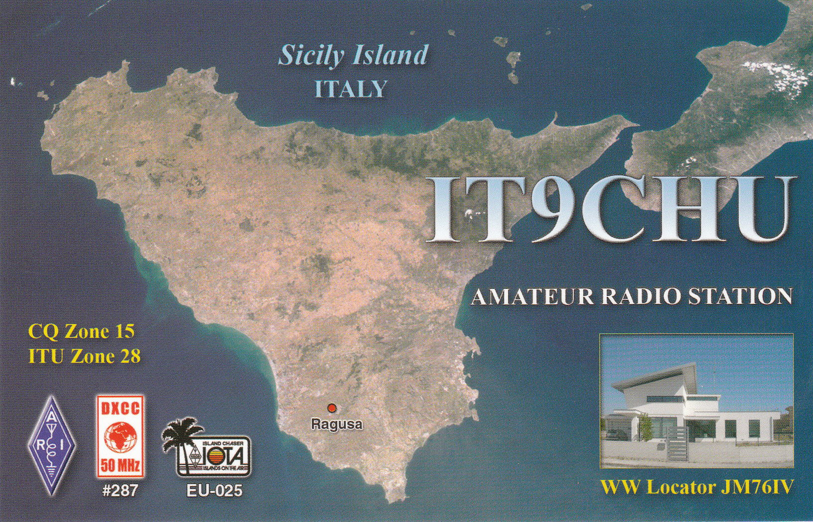
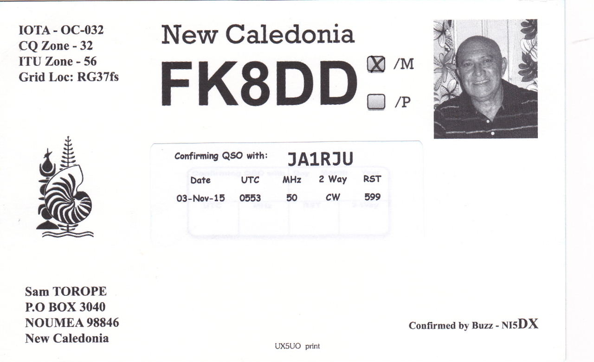

Flash ! DX


 
|
|
|
|

|
|
|
[Back Issues Jan.2016] TIME:UTC(JST-09:00) Report from JA1RJU(PM95sq) 31.Jan.2016(15:00b) Report from JA1RJU(PM95sq) 30.Jan.2016(15:00b) Report from JA1RJU(PM95sq) 29.Jan.2016(15:00b) Report from JA1RJU(PM95sq) 28.Jan.2016(15:00b) Report from JA1RJU(PM95sq) 27.Jan.2016(15:00b)
|
◎
HF帯で1月12日からアクティブに運用していたK5P(Palmyra Atoll)のDX-Peditionは、75,210 QSOsの成果を挙げ、1月26日に終了した。 6m（50.106MHz）の運用も予定されていたが、残念ながらQSOは”ゼロ”に終わった。 この時期の運用は、太平洋の”近場”とは言え難しいパスだった。
◎JAからの伝搬はHF帯でも難しいVP8STI(South Sandwich Islands)も1月17日から運用が開始されていたが、
1月24日に、嵐(風速112km！)に遭遇、一行がキャンプしていたテントの2張りが飛ばされる被害が出たため、
OP全員が全ての機器と個人の所有物を島に置いたまま、乗船してきた船(ブレーブハート号)に緊急避難した。 |
Report from JA1RJU(PM95sq) 26.Jan.2016(15:00b) Report from JA1RJU(PM95sq) 25.Jan.2016(15:00b) Report from JA1RJU(PM95sq) 24.Jan.2016(15:00b) Report from JA1RJU(PM95sq) 23.Jan.2016(15:00b) Report from JA1RJU(PM95sq) 22.Jan.2016(15:00b) Report from JA1RJU(PM95sq) 21.Jan.2016(15:00b) Report from JA1RJU(PM95sq) 20.Jan.2016(15:00b) Report from JA1RJU(PM95sq) 19.Jan.2016(15:00ｂ) Report from JA1RJU(PM95sq) 18.Jan.2016(15:00b)
|
◎この冬初めての大雪となった関東地方。
昨夜遅くから降り出した雪は、都心部では未明に6cm程度の降雪となった。降雪に弱い首都圏の交通網は、早朝からマヒ状態となり大混乱となった。 東京都西部では、深夜に本格的な降雪となり”ベタ雪”の重い雪がアンテナに張り付いて、6mのロングブームやエレメントの破損が心配されたが、 明け方になって雪から雨に変わったため、幸い目だったダメージは無かった。 大雪を降らせた"爆弾"低気圧は、北上して東北、北海道で発達すると予想されているため、明日は関東地方沿岸でも強風が吹き荒れる恐れもある。 |
Report from JA1RJU(PM95sq) 17.Jan.2016(15:00b) Report from JA1RJU(PM95sq) 16.Jan.2016(15:00c)
|
◎
◎K5P((Palmyra Atoll))
Update: 16-Jan @ 2100z........ The 6M beacon is set on 50.106 MHz.....any busted calls or corrections will be made AFTER the DXpedition ends.....we are continuing to focus on Europe on all bands.....the % of EU QSOs has increased from 6% to 9% of our total over the last 48 hours.....please read this list of guidelines....... K5P |
Report from JA1RJU(PM95sq)
15.Jan.2016(15:00d)
VK4WTN 02:55 50.110.0 SSB into JA8 RS41
VK2BXT 03:20 50.120.0 SSB into JA8 RS53/55
VK3BFH 03:31 50.125.0 SSB into JA8 RS51
VK4RHT/b 03:54 50.281.0 CW Beacon into JA8
V73SIX/B 04:07- 50.0117 CW Beacon into JA1 RST599
VK4WTN 04:08 50.110.7 CW into JA8
VK4ZJB 04:15 50.110.0 CW into JA8
VK4WTN 04:14 50.110.7 SSB into JA8
|
◎
例年ならば、年末、年始には6mでのVK/ZLの入感も期待出来ていたのだが、2015年-2016年に掛けての6mバンドは全く静かな状態に終わっていた。 こんな中、今日は久しぶりにJA8からVK2/3/4の入感がリポートされたが、残念ながらJA1(PM95)ではV73SIX/Bの信号が強力に聞こえていた程度で、 VKの入感は全くなく、今日のVKとのQSOは”幻”に終わった。 現在HF帯を賑わしているK5P(Palmyra Atoll)のDX-Peditionは、アクティブに運用しているものの、HF帯のハイバンドの信号は予想していたよりも弱く、このコンデションでは6mのオープンの可能性はかなり難しいのではないかと懸念されている。K5Pの運用は1月25日までの予定。 |


1990年にJavis IsからQRVしたAH3C/KH5Jが1St-Palmyra Atollとの初6m-QSO
Palmyra AtollからアクティブにQRVしていたKH6ND/KH5(Michael)
Report from JA1RJU(PM95sq) 14.Jan.2016(15:00b) Report from JA1RJU(PM95sq) 13.Jan.2016(15:00b) Report from JA1RJU(PM95sq) 12.Jan.2016(15:00b) Report from JA1RJU(PM95sq) 11.Jan.2016(15:00b) Report from JA1RJU(PM95sq) 10.Jan.2016(15:00b) Report from JA1RJU(PM95sq) 09.Jan.2016(15:00b) Report from JA1RJU(PM95sq) 08.Jan.2016(15:00b) Report from JA1RJU(PM95sq) 07.Jan.2016(15:00b) Report from JA1RJU(PM95sq) 06.Jan.2016(15:00b) Report from JA1RJU(PM95sq) 05.Jan.2016(15:00b) Report from JA1RJU(PM95sq) 04.Jan.2016(15:00b) Report from JA1RJU(PM95sq) 03.Jan.2016(15:00b) 2016 New Year Party Report from JA1RJU(PM95sq) 02.Jan.2016(15:00b) 2016 New Year Party Report from JA1RJU(PM95sq) 01.Jan.2016(15:00b) Wishing you all and your families a happy and healthy 2016
